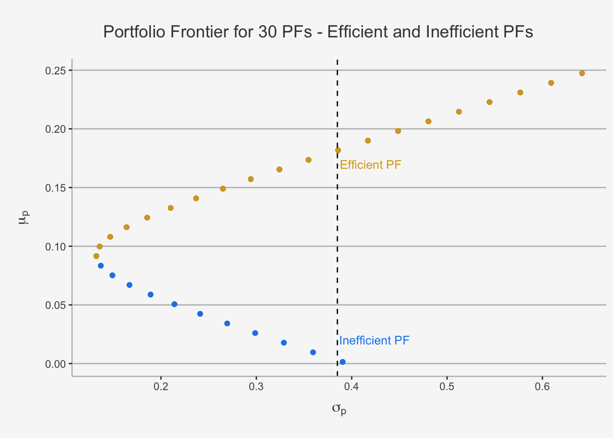

Chapter 5 Chapter 4: Inductive Statistics and Regression Models
The third chapter covers Inductive Statistics and Regression modeling. Therein, we cover inductive properties of statistical distributions, such as confidence intervals and hypothesis tests, and dig into univariate Linear Regression based on correlation & covariance properties we learned throughout the first weeks. Further, we introduce the connection of equity and \(\beta\) in form of the equity risk premium, define certain options to calculate a \(\beta\) factor, and use the concept of \(\beta\) within a regression setting.
5.1 Inductive Statistics
We now covered the theoretical founding stones of statistical analysis. Now, it is time to dig deeper into one of the major applications of these properties in inferential analysis. To do so, we will introduce the concept of inductive statistics.
Inductive statistics is the branch of statistics dealing with conclusions, generalizations, predictions, and estimations based on data from samples. In essence, inductive statistics takes information from a representative sample and attempts to generalise it to a general population. Representative here means that we can assume that the population follows the same distributional properties as the sample, thereby implying that all properties that show to hold in a sample can be generalised to the true population. Consequently, we use the term inductive because we “induce” something from a given sample.
Inductive statistics are very applied since it is generally infeasible or simply too involved to analyze the entire population in order to obtain full certainty as to the true environment. For instance, we can never rely on the entire time-series of observations to define a return. Consequently, to obtain insight about the true but unknown parameter value, we draw a sample from which we compute statistics or estimates for the parameter.
In this chapter, we will cover three main parts: Point Estimators, Confidence Intervals and Hypotheses Testing.
When considering Point Estimators, we learn about samples, statistics, and estimators. Most of the topics are built on the statistical properties used earlier.In particular, we present the linear estimator, explain quality criteria (such as the bias, mean-square error, and standard error) and the large-sample criteria. Related to the large-sample criteria, we present the fundamental theorem of consistency, for which we need the definition of convergence in probability and the law of large numbers. As another large-sample criterion, we introduce the unbiased efficiency, explaining the best linear unbiased estimator (BLUE) or, alternatively, the minimum variance linear unbiased estimator. We then discuss the maximum likelihood estimation technique, one of the most powerful tools in the context of parameter estimation.
When using Confidence Intervals, we present the confidence interval. We then present the probability of error in the context of confidence intervals, which is related to the confidence level.
We then conclude the chapter by performing hypotheses testing. To test for these, we develop a test statistic for which we set up a decision rule. For a specific sample, this test statistic then either assumes a value in the acceptance region or the rejection region, regions that we describe in this chapter. Furthermore, we see the two error types one can incur when testing. We see that the hypothesis test structure allows one to control the probability of error through what we see to be the test size or significance level. We discover that each observation has a certain p-value expressing its significance. As a quality criterion of a test, we introduce the power from which the uniformly most powerful test can be defined.
5.1.1 Point Estimators
We use the information obtained from the sample, or better, the statistic, to infer about a point estimator of a certain parameter \(\theta\). Formally, if we do this, we refer to the estimation function as an estimator and denote it by:
\[ \hat{\theta} : X \rightarrow \Theta \]
This means we take the sample space X and map it into the set space \(\Theta\) (if you don’t know any more the distinction between these values, go to the book in Chapter 3.1). But, in general, this just means that we create an estimator of a parameter, that we usually denote with a “hat” sign, \(\hat{}\), from a sample we observe and that this estimator is valid for an unobservable population because we assume that we can “map” or “generalise” this sample to this population (set space) (b/c we assume it has the same attributes).
The exact structure of the estimator is predetermined before the sample is realized. After the estimator has been defined, we simply need to enter the sample values accordingly.
Due to the estimator’s dependence on the random sample, the estimator is itself random. A particular value of the estimator based on the realization of some sample is called an estimate. We will show you in simulation studies that, if we repeat the same draw multiple times, we will always receive slightly different moments of a probability distribution (but, if repeated sufficient times, the variance between these draws will diminish). For instance, if we realize 1000 samples of given length n, we obtain 1000 individual estimates. Sorting them by value—and possibly arranging them into classes—we can compute the distribution function of these realizations, which is similar to the empirical cumulative distribution function
5.1.1.1 Estimators for the mean
As an illustration, let’s create normally distributed returns with parameters \(\mu\) and \(\sigma^2\) such that \(Y = N(\mu, \sigma^2)\). Let’s define that we have 10, 100, 1’000 and 10’000 individual samples for IID draws of X. Then, we compute the mean as:
\[ \hat{x_i} = \frac{1}{n}\sum_{i=1}^nX_i \]
# Set a random seed
set.seed(124)
# Draw 10, 100, 1000 and 10000 distributions with random numbers
x_10 <- as.data.frame(rnorm(10))
colnames(x_10) <- "x"
x_100 <- as.data.frame(rnorm(100))
colnames(x_100) <- "x"
x_1000 <- as.data.frame(rnorm(1000))
colnames(x_1000) <- "x"
x_10000 <- as.data.frame(rnorm(10000))
colnames(x_10000) <- "x"# Create plots
p10 <- x_10 %>% ggplot(aes(x=x)) + geom_histogram(bins = 100) + ggtitle("n = 10")
p100 <- x_100 %>% ggplot(aes(x=x)) + geom_histogram(bins = 100) + ggtitle(" n = 100")
p1000 <- x_1000 %>% ggplot(aes(x=x)) + geom_histogram(bins = 100) + ggtitle("n = 1000")
p10000 <- x_10000 %>% ggplot(aes(x=x)) + geom_histogram(bins =100) + ggtitle("n = 10000")
# Merge plots
Rmisc::multiplot( p10 + theme_fivethirtyeight(), p1000 + theme_fivethirtyeight(), p100 + theme_fivethirtyeight(), p10000 + theme_fivethirtyeight(), cols = 2) 
We see that the distribution of the sample means copy quite well the appearance of the theoretical sample distribution density function if we increase n. This is the first intuition behind what we call sampling statistics. As you’ve seen in earlier courses, this is one of the fundamental ideas behind inductive statistics.
5.1.1.2 Linear Estimators
Let’s start introducing linearity into the concept of inductive statistics. To do so, we introduce the linear estimator. Suppose we have a sample of size n such that \(X = (X_1, X_2, \dots, X_n)\). The linear estimator then has the following form:
\[ \hat{\theta} = \sum^n_{i=1}a_iX_i \] Where each draw of \(X_i\) is weighted by some real number, \(a_i\).
We know that the linear estimator is normally distributed. This understanding is based on two important properties introduced in basic statistics, if we assume independent and identically distributed draws (IID).
Property 1 - location-scale invariance property: If we multiply X by b and add a where a and b are real numbers, the resulting \(a + b\cdotX\) is again normally distributed with other units of measurement: \(N(a+\mu, b\sigma)\)
Property 2 - stability under summation: The sum of an arbitrary number n of normal random variables (\(X_1,\dots,X_n\)) is again normally distributed
Thus, any linear estimator will be normal. This is an extremely attractive feature of the linear estimator, as it allows us to draw inference based on Gaussian distribution properties. This is also the reason why we normally assume linearity in empirical, econometric models. As such, even if the underlying distribution is not the normal distribution, according to the Central Limit Theorem, the sample mean will be approximately normally distributed as the sample size increases within linear settings. This is what we have seen before when we have drawn multiple sample means and plotted them as a histogram. This result facilitates parameter estimation for most distributions. So, even though the exact value of the point estimator, with \((\mu, \sigma^2)\), is unknown, we observe the distribution of the sample means and try to find the location of the center.
For instance, if we have a Bernoulli Distribution with \(\mu = 0\), we can use the formula for the sample mean and draw a large number of individual samples, calculate the mean from each sample and plot its distribution as a histogram. Accordingly, we then take the distributional properties and understand that it will follow an approximately normal distribution with \((\mu, \sigma^2)\) and thus can infer that the “true” sample mean is at the location center of the distribution of the sample means. This is also known as Law of Large Numbers and will be introduced shortly.
p10000_normal_dist <- x_10000 %>% ggplot(aes(x=x)) + geom_histogram(aes(y = ..density..),bins =100) + stat_function(fun = dnorm, colour = "red", size = 1, linetype = "dashed", args = list(mean = mean(x_10000$x), sd = sd(x_10000$x)))
p10000_normal_dist
5.1.1.3 Quality Criteria of Estimators
The question related to each estimation problem should be what estimator would be best suited for the problem at hand. Estimators suitable for the very same parameters can vary quite remarkably when it comes to quality of their estimation. Here we will explain some of the most commonly em- ployed quality criteria.
Bias
An important consideration in the selection of an estimator is the average behavior of that estimator over all possible scenarios. Depending on the sample outcome, the estimator may not equal the parameter value and, instead, be quite remote from it. This is a natural consequence of the variability of the underlying sample. However, the average value of the estimator is something we can control.
For that, we first consider the sampling error. This is the difference between the estimate and the population parameter. The expected value of the sampling error is defined as Bias and is given as:
\[ E(\hat{\theta} - \theta) \]
If the expression is equal to zero, then we say this is an unbiased estimator.
Let’s illustrate the concept of bias in the case of our sample mean and sample variance.
Sample Mean
Whenever a population mean has to be estimated, a natural estimator of choice is the sample mean. Let us examine its bias. This is given by:
\[ \begin{align*} E(\bar{X} - \mu) &= E(\frac{1}{n}\sum_{i=1}^nX_i - \mu) \\ &= \frac{1}{n}\sum_{i=1}^nE(X_i) - \mu && \text{the expected value of } \mu \text{ is } \mu \\ &= \frac{1}{n}\sum_{i=1}^n\mu - \mu && \text{the expected value is } \mu \\ &= \frac{1}{n}n\mu - \mu \\ &= 0 \end{align*} \]
So the sample mean is unbiased.
Sample Variance
The sample variance is given as:
\[ s^2 = \frac{1}{n}\sum^n_{i=1}(x_i - \bar{x})^2 \] Then, we compute, but not show, the bias of the sample variance, as:
\[ \begin{align*} E(s^2-\sigma^2) &= \sigma^2 - \frac{n-1}{n}\sigma^2 \\ &= \frac{1}{n}\sigma^2 \end{align*} \]
That is, the bias of the sample variance is negligible if n is sufficiently large.
Mean Squared Error
As just explained, bias as a quality criterion tells us about the expected deviation of the estimator from the parameter. However, the bias fails to inform us about the variability or spread of the estimator. For a reliable inference for the parameter value, we should prefer an estimator with rather small variability or, in other words, high precision. The Mean Squared Error incorporates both properties. It includes both a term to account for the bias, the expected deviation of the estimator, as well as the precision, the variability (variance) of the estimator.
The sampling distribution provides us with both a theoretical measure of the mean as well as the spread of the estimator, that is its variance. The suqare root of the variance is also called standard error and is given as:
\[ \sqrt{Var(\hat{\theta_n})} \] This value constitutes the spread, or variability, of the sample distribution.
We use the mean squared error because, although we stated the bias as an ultimately preferable quality criterion, a bias of zero may be too restrictive a criterion if an estimator is only slightly biased but has a favorably small variance compared to all possible alternatives, biased or unbiased. So, we need some quality criterion accounting for both bias and variance.
Taking squares rather than the loss itself incurred by the deviation, the MSE is defined as the expected square loss:
\[ MSE(\hat{\theta}) = E[(\theta - \hat{\theta})^2] \]
If we reformulate this expression, we retrieve a very famous expression used in Machine Learning and Econometrics. This term is also known as the Bias-Variance Trade-Off and is derived as follows:
\[ \begin{align} E[(\theta - \hat{\theta})^2] &= E[(\theta + \epsilon - \hat{\theta})^2] \\ &= E[(\theta + \epsilon - \hat{\theta} + E[\hat{\theta}] - E[\hat{\theta}])^2] \\ &= E[(\theta - \hat{\theta})^2] + E[\epsilon^2] + E[(E[\hat{\theta}]- \hat{\theta})^2] + 2E[(\theta - E[\hat{\theta}])\epsilon] + 2E[(E[\hat{\theta}]- \hat{\theta})\epsilon] + 2E[(E[\hat{\theta}]- \hat{\theta})(\hat{\theta} - E[\hat{\theta}])] \\ &= (\theta - \hat{\theta})^2 + E[\epsilon^2] + E[(E[\hat{\theta}]- \hat{\theta})^2] + \underbrace{2(\theta - E[\hat{\theta}])E[\epsilon] + 2E[(E[\hat{\theta}]- \hat{\theta})]E[\epsilon] + 2E[(E[\hat{\theta}]- \hat{\theta})](\hat{\theta} - E[\hat{\theta}])}_{\text{if written out, this will all cancel each other out, thereby = 0}} \\ &= \underbrace{(\theta - \hat{\theta})^2}_{\text{Bias term}} + E[\epsilon^2] + \underbrace{E[(E[\hat{\theta}]- \hat{\theta})^2]}_{\text{Variance term}} \\ &= Bias[\hat{\theta}]^2 + Var[\hat{\theta}] + Var[\epsilon] \end{align} \]
So, we see that the mean-square error is decomposed into the variance of the estimator and a transform (i.e., square) of the bias, including a general, systematic bias term. This is a general dilemma of each estimation strategy. In the end, we want to minimise the MSE, implying that we want a model that is unbiased but not too variable, as an increased variation induces noise.
5.1.1.4 Large Sample Criteria
Now, we have seen the properties of linear estimators and derived two important notions to define the accuracy of a sample estimator related to its population counterpart. However, another important characteristic in inductive statistics are asymptotic properties. That is, the behavior of the estimator if the sample size approaches infinity. The two most important concepts in this field are consistency and efficiency (unbiasedness)
consistency
In order to think about consistency, we need to understand some aspects of the Central Limit Theorem. The asymptotic properties may facilitate deriving the large sample behavior of more complicated estimators. One of these aspects is given as convergence in probability. That means we consider whether the distribution of an estimator approaches some particular probability distribution as the sample sizes increase. To proceed, we state the following definition.
\[ \lim_{n \rightarrow \infty}P(|\hat{\theta}_n - c|> \epsilon) = 0 \] This property states that as the sample size becomes arbitrarily large, the probability that our estimator will assume a value that is more than \(\epsilon\) away from c will become increasingly negligible, even as \(\epsilon\) becomes smaller. That is, we say that \(\hat{\theta}_n\) converges in probability to c:
\[ plim\hat{\theta}_n = c \]
Convergence in probability does not mean that an estimator will eventually be equal to c, and hence constant itself, but the chance of a deviation from it will become increasingly unlikely.
Suppose now that we draw several samples of size n. Let the num- ber of these different samples be N. Consequently, we obtain N estimates, \(\hat{\theta}_n^{(i)}\). Utilizing the prior definition, we formulate the following law.
\[ plim \frac{1}{N}\sum_{i=1}^N \hat{\theta}_n^{(i)} = E(\hat{\theta}_n) \]
This is a valuable property since when we have drawn many samples, we can assert that it will be highly unlikely that the average of the observed estimates will be a realization of a remote parameter. An important aspect of the convergence in probability becomes obvious now. Even if the expected value of \(\hat{\theta}_n\) is not equal to \(\theta\) in finite samples, it can still be that \(plim \hat{\theta}_n = \theta\). That is, the expected value may gradually become closer to and eventually indistinguishable from \(\theta\), as the sample size n increases. To account for these and all unbiased estimators, we introduce the definition of Consistency.
\[ plim\hat{\theta}_n = \theta \]
This is exactly what we were able to portray in the histograms above. That is if we have a linear estimator and we draw N IID samples from this estimator, then we know that, as N approaches infinity, the estimator will (I) follow a Normal distribution property (=asymptotically normal) and (II) the average of all sample means will approach the expected value of the population mean (=consistent), implying that, even if we have bias in finite samples, this bias will diminish in large samples.
Unbiased Efficiency
In the previous discussions in this section, we tried to determine where the estimator tends to. This analysis, however, left unanswered the question of how fast the estimator gets there. For this purpose, we introduce the notion of unbiased efficiency.
For that, let us suppose we have two unbiased estimators, \(\hat{\theta}\) and \(\hat{\theta}^*\). Then, we say that \(\hat{\theta}\) is a more efficient estimator than \(\hat{\theta}^*\) if it has a smaller variance; that is:
\[ Var_\theta(\hat{\theta}) < Var_\theta(\hat{\theta}^*) \]
Consequently, no matter what the true parameter value is, the standard error for the first estimator will always be smaller.
In general, both properties are highly important in understanding the precision and pace of sample distribution convergence.
5.1.1.5 Maximum Likelihood Estimator
The method we discuss next provides one of the most essential tools for parameter estimation. Due to its structure, it is very intuitive.
For that, we first suppose that the distribution of some variable Y is characterised by \(\theta\). Then, we usually draw a random sample of n IID observations. Consequently, as we have seen, the joint probability distribution function of the random sample X is given by:
\[ f_X(x_1,\dots,x_n) = f_Y(x_1)\cdot \dots f_Y(x_n) \] This is known as the likelihood function. This basically indicates that the distribution of the sample X is governed by the parameter \(\theta\) and is given by:
\[ L_X(\theta) = f_X(x) \]
Usually, we write this as the log likelihood function due to its additivity principle, which makes computation easier:
\[ l_X(\theta) = \ln f_X(x) \]
That means we now defined that the distribution of X is given by the parameter space in \(\theta\).
Suppose we observe a particular value \(x = (x_1, x_2, \dots, x_n)\) in our sample. The fundamental question here is which parameter values of \(\theta\) best represent the observed relationship. Formally, that means we need to determine the very parameter value that maximizes the probability of the realized density function at x (if the distribution is continuous).
That is, we need maximize the log-likelihood function with respect to all possible values of \(\theta\).
From baseline analysis, we know that we derive a maximum value of a parameter in a function by taking the first derivative of the function w.r.t. that parameter and set them equal to zero. In our case, this means for the log-likelihood function:
\[ \frac{\delta l_X(\theta)}{\delta \theta} = 0 \]
The resulting estimater of \(\theta\) is then defined as the Maximum Likelihood Estimator (MLE), because it yields the parameter value with the greatest likelihood (probability if discrete, and density function if continuous) of the given observation x.
The MLE method is extremely attractive since it often produces estimators that are consistent, asymptotically normally distributed, and asymptotically efficient, which means that, as the sample size increases, the estimators derived become unbiased and have the smallest variance.
Let’s now look at the practical application of MLE’s related to specific distributions.
MLE of the Poisson Distribution
The likelihood function of the Poisson distribution is:
\[ L_x(\lambda) = \prod_{i=1}^n\frac{\lambda^{x_i}}{x_i!}e^{-\lambda} \]
Then, the log-likelihood function is given as:
\[ \begin{align*} l_x(\lambda) &= ln[e^{-n\lambda}\prod_{i=1}^n\frac{\lambda^{x_i}}{x_i!}e^{-\lambda}] \\ &= -n\lambda + ln[\prod_{i=1}^n\frac{\lambda^{x_i}}{x_i!}e^{-\lambda}] \\ &= -n\lambda + ln(\prod_{i=1}^n\lambda^{x_i}) - ln(\prod_{i=1}^n x_i!) \\ &= -n\lambda + \sum_{i=1}^n(x_iln(\lambda)) - \sum_{i=1}^n(ln(x_i!)) && \text{product in ln transforms to sum, the rest is simple log rules} \end{align*} \]
Now, differentiating w.r.t \(\lambda\) and setting it equal to zero gives us:
\[ \begin{align} \frac{\delta l_x(\lambda)}{\lambda} = 0 &= -n + \sum_{i=1}^n\frac{x_i}{\lambda} \\ \lambda &= \frac{1}{n}\sum_{i=1}^nx_i = \bar{x} \end{align} \] So, we see that the MLE of the Poisson parameter equals the sample mean.
MLE of the Normal Distribution
We follow the same approach as before. For that, we first define the usual likelihood function of the normal distribution as:
\[ \begin{align*} L_x(\mu, \sigma^2) &= \prod_{i=1}^nf_Y(x_i) \\ &= Y(x_1) * \dots * Y(x_n) \\ &= \frac{1}{\sqrt{2\pi\sigma^2}}e^{-(x_1 - \mu)^2 / 2\sigma^2} * \dots * \frac{1}{\sqrt{2\pi\sigma^2}}e^{-(x_n - \mu)^2 / 2\sigma^2} \\ &= (\frac{1}{\sqrt{2\pi\sigma^2}})^n\cdot e^{-\sum_{i=1}^n(x_i - \mu)^2 / 2\sigma^2} \end{align*} \]
Now, taking the logarithm, we get:
\[ \begin{align*} l_x(\mu, \sigma^2) &= n \ln(\frac{1}{\sqrt{2\pi\sigma^2}}) -\sum_{i=1}^n(x_i - \mu)^2 / 2\sigma^2 \end{align*} \] Again, if we take the derivative of it w.r.t \(\mu\), we get:
\[ \begin{align*} \frac{l_x(\mu, \sigma^2)}{\mu} = 0 &= \sum_{i=1}^n(x_i - \mu) / \sigma^2 \\ \hat{\mu} &= \sum_{i=1}^nx_i = \bar{x} \end{align*} \]
And w.r.t \(\sigma^2\), we get:
\[ \begin{align*} \frac{l_x(\mu, \sigma^2)}{\mu} = 0 &= -\frac{n}{2\sigma^2} + \frac{\sum_{i=1}^n(x_i-\mu)^2}{2\sigma^4} \\ n &= \frac{\sum_{i=1}^n(x_i-\mu)^2}{\sigma^2} \\ \hat{\sigma}^2 &= \frac{1}{n}\sum_{i=1}^n(x_i-\mu)^2 \end{align*} \] which, as we know, is unbiased for the population variance.
5.1.2 Confidence Intervals
In the previous chapter, we dealt with the problem of unobservable true estimators by estimating the unknown parameter with a point estimator to obtain a single number from the information provided by a sample. It will be highly unlikely, however, that this estimate — obtained from a finite sample — will be exactly equal to the population parameter value even if the estimator is consistent. The reason is that estimates most likely vary from sample to sample. However, for any realization, we do not know by how much the estimate will be off.
To overcome this uncertainty, one might think of computing an interval or, depending on the dimensionality of the parameter, an area that contains the true parameter with high probability. That is, we concentrate in this chapter on the construction of confidence intervals.
5.1.2.1 Confidence Levels and Confidence Interval
When inferring on an unknown parameter, we previously resorted to a single estimate. The likelihood of exactly getting this true parameter may be very small in these cases. However, by estimating an interval, which we may denote by \(I_{\theta}\), we use a greater portion of the parameter space, that is, \(I_\theta \in \Theta\), and not just a single number. This may increase the likelihood that the true parameter is one of the many values included in the interval.
Choosing an appropriate interval is subject to a trade-off between a high probability of the interval containing the true parameter and the precision of gained by narrow intervals.
To construct these intervals, we should use the information provided by the sample. Thus, the interval bounds depend on the sample. This, technically, allows us to state that each interval bound is a function that maps the sample space, denoted by X, into the parameter space since the sample is some outcome in the sample space and the interval bound transforms the sample into a value in the parameter space representing the minimum or maximum parameter value suggested by the interval.
Formally, we define l(x) as lower and u(x) as upper bound of some samples contained in x. Now comes an important notion. We can derive the probability of the interval lying beyond the true parameter (i.e., either completely below or above) from the sample distribution. These two possible errors occur exactly if either \(u(x) < \theta\) or \(\theta < l(x)\). Our objective is then to construct an interval so as to minimize the probability of these errors occurring. That is:
\[ P(\theta \notin[l(X)u(X)]) = P(\theta < l(X)) + P(u(X) < \theta) = \alpha \]
Mostly, we want this probability of error to be equal to a given parameter, \(\alpha\). We commonly know this from the distributional value of \(\alph = 0.05\), such that in 5 % of all outcomes, the true parameter will not be covered by the interval.
Definition of a Confidence Level
For some parameter \(\theta\), let the probability of the interval not containing the true parameter value be given by the probability of error \(\alpha\). Then, with probability \(1 - \alpha\), the true parameter is covered by the interval [l(X), u(X)]. This is called the confidence level. and is given by the probability:
\[ P(\theta \in [l(X) , u(X)]) \geq 1 − \alpha \]
Definition of a Confidence Interval
If the confidence level probability holds, we can refer to an interval [l(X), u(X)] as \(1-\alpha\) confidence interval (CI) no matter what is the true but unknown parameter value \(\theta\).
The interpretation of the confidence interval is that if we draw an increasing number of samples of constant size n and compute an interval from each sample, \(1-\alpha\) of all intervals will eventually contain the true parameter value \(\theta\).
This is then directly related to the baseline statistical notions you heard about that 95 % of all CIs will contain the true parameter (or, conversely, we have an \(\alpha\) error rate of 5%, meaning that in 5 100 CIs, we won’t contain the true parameter value \(\theta\)) (PS: This is exactly how hypotheses testing is conducted, but more on this later).
As we will see in the examples, the bounds of the confidence interval are often determined by some standardized random variable composed of both the parameter and point estimator, and whose distribution is known (e.g. mean and variance). Furthermore, for a symmetric density function such as that of the normal distribution, it can be shown that with given \(\alpha\), the confidence interval is the tightest if we have \(p_l = \alpha/2\) and \(p_u = \alpha/2\). That corresponds to bounds l and u with distributions that are symmetric to each other with respect to the the true parameter \(\theta\).
5.1.2.2 Confidence Interval for the mean of a Normal Random Variable
We will only cover the CI for the Normal Distribution, as this distribution is by far the most commonly known. For that we first start with the normal random variable Y with known variance is known but whose mean is unknown. For the inference process, we draw a sample X of n IID observations. A sufficient and unbiased estimator for \(\mu\) is given by the sample mean, which is distributed as:
\[ \bar{X} = \sum_{i=1}^n X_i \sim N(\mu, \frac{\sigma^2}{n}) \]
If we standardize the sample mean, we obtain the standard normally distributed random variable:
\[ Z = \sqrt{n}\frac{\bar{X}-\mu}{\sigma} \sim N(0,1) \]
For this Z, it is true that:
\[ \begin{align} P(q_{a/2} \leq Z \leq q_{1-\alpha/2}) &= P(q_{a/2} \leq \sqrt{n}\frac{\bar{X}-\mu}{\sigma} \leq q_{1-\alpha/2}) \\ &= P(\frac{\sigma}{\sqrt{n}}q_{a/2} \leq \bar{X} -\mu \leq \frac{\sigma }{\sqrt{n}}q_{1-\alpha/2}) \\ &= P(\frac{\sigma}{\sqrt{n}}q_{a/2} \leq \mu - \bar{X} \leq \frac{\sigma }{\sqrt{n}}q_{1-\alpha/2}) \\ &= P(\bar{X} + \frac{\sigma}{\sqrt{n}}q_{a/2} \leq \mu \leq \bar{X} + \frac{\sigma }{\sqrt{n}}q_{1-\alpha/2}) \\ &= P(\bar{X} - \frac{\sigma}{\sqrt{n}}q_{1-a/2} \leq \mu \leq \bar{X} + \frac{\sigma }{\sqrt{n}}q_{1-\alpha/2}) \\ &= P(l(X) \leq \mu \leq u(X)) = 1 - \alpha \end{align} \]
Where \(q_{\alpha/2}\) and \(q_{1- \alpha/2}\) are the \(\alpha/2\) and \(1-\alpha/2\) quantiles of the standard normal distribution, respectively
That is, by standardizing the distribution of the IID samples, we obtain the probability that the true mean parameter, \(\mu\), will be within the upper and lower bound of the CI when we repeatedly draw n samples is equal to \(1-\alpha\). In other words, in \(1-\alpha\) percent of cases, the CI drawn will include the true parameter. That is:
\[ I_{1-\alpha} = [\bar{X} + \frac{\sigma}{\sqrt{n}}q_{1-a/2}, \bar{X} + \frac{\sigma}{\sqrt{n}}q_{1-a/2}] \]
5.1.2.3 Confidence Interval for the mean of a Normal Random Variable with unknown Variance
Let us once again construct a confidence interval for a normal random variable Y but this time we assume that the variance and the mean are unknown. If we again take n IID samples, take their mean values and standardize the variables with an unknown variance and mean term, then we obtain the new standardized random variable as a student’s t distribution with n-1 DOF:
\[ t = \sqrt{n}\frac{\bar{X} - \mu}{s} \]
Where \(s^2 = 1/(n-1)\sum_{i=1}^n(X_i - \bar{X})^2\).
Therefore, we can state:
\[ P(t_{\alpha/2}(n-1) \leq t \leq t_{1 - \alpha/2}(n-1)) = 1-\alpha \]
Where \(t_{\alpha/2}\) and \(t_{1- \alpha/2}\) are the \(\alpha/2\) and \(1-\alpha/2\) quantiles of the t-distribution with n-1 DOF, respectively.
Using the same approach as before, we can derive the Confidence Interval of this distribution again as:
\[ \begin{align} P(t_{a/2}(n-1) \leq t \leq t_{1-\alpha/2}(n-1)) &= P(t_{a/2}(n-1) \leq \sqrt{n}\frac{\bar{X} - \mu}{s} \leq t_{1-\alpha/2}(n-1)) \\ &= P(\frac{s}{\sqrt{n}}t_{a/2}(n-1) \leq \bar{X} -\mu \leq \frac{s }{\sqrt{n}}t_{1-\alpha/2}(n-1)) \\ &= P(\frac{s}{\sqrt{n}}t_{a/2}(n-1) \leq \mu - \bar{X} \leq \frac{s}{\sqrt{n}}t_{1-\alpha/2}(n-1)) \\ &= P(\bar{X} + \frac{s}{\sqrt{n}}t_{a/2}(n-1) \leq \mu \leq \bar{X} + \frac{s}{\sqrt{n}}t_{1-\alpha/2}(n-1)) \\ &= P(\bar{X} - \frac{s}{\sqrt{n}}t_{1-a/2}(n-1) \leq \mu \leq \bar{X} + \frac{s}{\sqrt{n}}t_{1-\alpha/2}(n-1)) \\ &= P(l(X) \leq \mu \leq u(X)) = 1 - \alpha \end{align} \]
That is:
\[ I_{1-\alpha} = [\bar{X} - \frac{s}{\sqrt{n}}t_{1-a/2}(n-1), \bar{X} + \frac{s}{\sqrt{n}}t_{1-a/2}(n-1)] \]
5.1.3 Hypothesis Testing
Inference on some unknown parameter meant that we had no knowledge of its value and therefore we had to obtain an estimate. This could either be a single point estimate or an entire confidence interval. However, sometimes, one already has some idea of the value a parameter might have or used to have. Thus, it might not be important to obtain a particular single value or range of values for the parameter, but instead gain sufficient information to conclude that the parameter more likely either belongs to a particular part of the parameter space or not. So, instead we need to obtain information to verify whether some assumption concerning the parameter can be supported or has to be rejected.
This brings us to the field of hypothesis testing. Next to parameter estimation that we covered in the last two parts, it constitutes the other important part of statistical inference; that is, the procedure for gaining information about some parameter. In essence, we use hypothesis testing to determine whether a certain parameter of interest, given its statistical properties and distribution, is, with a sufficient probability, equal to a pre-defined, or hypothesized, value of the parameter space.
5.1.3.1 Hypotheses
Setting up the hypotheses
Before we can test any hypothesis, we first need to understand what the term actually means. In the case of hypothesis testing, we have two competing statements to decide upon. These statements are the hypotheses of the test.
Since in statistical inference we intend to gain information about some unknown parameter \(\theta\), the possible results of the test should refer to the parameter space \(\Theta\) containing all possible values that \(\theta\) can assume. More precisely, to form the hypotheses, we divide the parameter space into two disjoint sets, namely \(\Theta_0\) and \(\Theta_1\). We assume that the unknown parameter is either in \(\Theta_0\) and \(\Theta_1\). Now, with each of the two subsets we associate a hypothesis:
- Null Hypothesis - \(H_0\): States that the parameter \(\theta\) is in \(\Theta_0\)
- Alternative Hypothesis - \(H_1\): States that the parameter \(\theta\) is in \(\Theta_2\)
The null hypothesis may be interpreted as the assumption to be maintained if we do not find material evidence against it.
Decision Rule
The task of hypothesis testing is to make a decision about these hypotheses. So, we either cannot reject the null hypothesis and, consequently, have to reject the alternative hypothesis, or we reject the null hypothesis and decide in favor of the alternative hypothesis.
A hypothesis test is designed such that the null hypothesis is maintained until evidence provided by the sample is so significant that we have to decide against it. This leads us to the two common ways of using the test.
In general, the decision rule of any hypothesis test, and ergo the main idea behind hypotheses testing is the following. We want to test whether a sample estimate is equal to a true parameter. Since we can only observe the sample distribution, we need to make assumptions on the distribution and the asymptotic behavior of the parameters. We have seen how to ensure for consistency, asymptotic normality and efficiency under linear estimators. For these estimators, we now define a Null Hypothesis stating that they are equal to a true population parameter which we define individually (for instance, we usually state that the true parameter is 0 in a regression model). Then, we draw the n IID samples with the properties discussed above and we look at their parameter statistics (or moments), mostly in terms of their expected estimate and their variation. Based on both parameter statistics, we then draw the respective distribution and obtain the probability density curve. If the probability mass of this density curve is lower than the defined \(\alpha\) benchmark, then we say can state with a sufficient certainty that, given the distributional characteristics, the hypothesized true value is incorrect and, thus, the Null Hypothesis that the true value is equal to the hypothesized value (e.g. 0) can be rejected. #### Error Types
We have to be aware that no matter how we design our test, we are at risk of committing an error by making the wrong decision. In general we run risk of making two distinct errors.
Type 1 and Type 2 Error
- Type 1 Error: The error resulting from rejection of the null hypothesis given that it is actually true. This is known as False Negative
- Type 2 Error: The error resulting from failing to reject the null hypothesis given that the alternative holds. This is known as False Positive
Unfortunately, however, we do not know whether we commit an error or not when we are testing. We do have some con- trol, though, as to the probability of error given a certain hypothesis as we explain next.
The P value
The p value is the notion we usually interact with when testing hypotheses. In essence, it displays the significance level for the respective t-statistic of our parameter statistics and thus tells us whether to reject the null hypothesis or not. In other words, it shows us at which significance level this value of t(x) would still lead to a decision of failing to reject the null hypothesis while any value greater than t(x) would result in its rejection.
We can interpret the p-value as follows. Suppose we obtained a sample outcome x such that the test statistics assumed the corresponding value t(x). Now, the p value indicates the probability that, given our assumption about the true parameter, our hypothesized value is indeed the true value. In other words, it states how likely it is that the true value is indeed the hypothesized value, given the distribution of our parameters. If t(x) is a value pretty close to the median of the distribution of t(X), then the chance that the true value is indeed equal to the hypothesised value, given our distribution, is fairly feasible. Then, the p-value will be large. However, if, instead, the value t(x) is so extreme that the chances will be minimal under the null hypothesis that the true value equals the hypothesised value, this will lead to a very low p-value. If p is less than some given significance level \(\alpha\), we reject the null hypothesis and we say that the test result is significant.